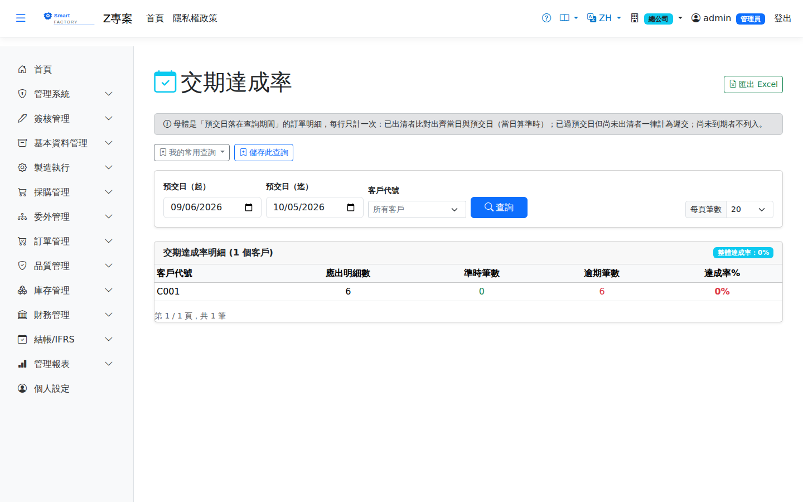

交期達成率Delivery Rate
路由：/DeliveryRate | 訂單準時出貨率統計Route: /DeliveryRate | On-time shipment statistics per order
統計訂單的準時出貨達成率，依客戶分組。Measures the on-time shipment rate of sales orders, grouped by customer.
母體是「這段期間該出的單」，不是「這段期間出掉的貨」：The population is what was due to ship in the period, not what actually shipped in it:查詢區間比對的是預交日，每一行訂單明細只計一次，三種結果： the date range is matched against the promised date, and each order line is counted exactly once, with three possible outcomes:
- 已出清——以出齊那一天比對預交日，當天出算準時。分批出貨時看的是最後一批，不是第一批。Fully shipped — the date the last shipment completed the line is compared with the promised date; shipping on the day itself counts as on time. With split shipments it is the last batch that matters, not the first.
- 已過預交日仍未出清——算遲交。Past the promised date and still not complete — counted as late.
- 尚未到期——不列入。Not yet due — excluded.
2026-09-21 口徑變更，歷史數字多半會下降：The basis changed on 2026-09-21 and most historical figures fall:舊口徑的母體只有已經出掉的貨，於是「已經過了預交日、貨還沒出」的訂單根本不在分母裡——「訂單逾期跟催」列得出來的單，這張表看不到。新口徑把那些單算進來。另外兩件事也一併修正：對不到訂單明細的孤兒出貨列不再計入分母（過去它們讓準時＋逾期 ≠ 總數），而「預交日在期間內、實際在期間後才出」的單過去兩邊都落不到而靜默消失，現在會出現在預交日所在的期間。 The old population contained only goods already shipped, so an order past its promised date but not yet shipped was absent from the denominator — the very lines the Overdue Sales Orders report lists were invisible here. The new basis counts them. Two other things are fixed at the same time: orphan shipment lines that match no order line no longer enter the denominator (they used to make on-time plus late fail to add up to the total), and a line promised inside the period but shipped after it used to fall through both periods and disappear; it now appears in the period its promised date belongs to.

交期達成率畫面截圖（示意，實際欄位/資料依權限與查詢條件而異）Delivery rate screenshot (illustrative; actual fields and data vary by permission and query criteria)
查詢Search
1
查詢列輸入條件後點「查詢」；欄位標題可點擊排序，清單下方有分頁導航。Enter your criteria on the query bar and click "Search"; column headers can be clicked to sort, and the paging controls sit below the list.
欄位說明Field reference
查詢條件Query criteria
| 條件Condition | 說明Guide |
|---|---|
| 預交日（起 / 迄）Promised date (from / to) | 納入統計的預交日區間——決定「哪些訂單明細該在這段期間出」，與實際何時出貨無關。留白時預設近 30 天The range of promised dates included, which decides which order lines were due to ship in the period regardless of when they actually shipped. Left blank, it defaults to the last 30 days |
| 客戶代號Customer | 只看單一客戶；留空為全部Limits the view to one customer; leave blank for all |
報表欄位Report fields
| 欄位Field | 說明Guide |
|---|---|
| 客戶代號Customer | 統計對象Group by |
| 應出明細數Due Lines | 預交日落在區間內、該客戶的訂單明細行數，為達成率的分母。準時＋逾期恆等於本欄Number of order lines for the customer whose promised date falls in the period; the denominator of the rate. On-time plus late always equals this figure |
| 準時筆數On-Time | 已出清且出齊日未晚於預交日的筆數Number of lines shipped in full no later than the promised date |
| 逾期筆數Late | 出齊日晚於預交日，或已過預交日仍未出清的筆數Number of lines completed after the promised date, or past the promised date and still not shipped in full |
| 達成率%Attainment % | 準時筆數 ÷ 應出明細數，即對該客戶的交期履約表現On-time lines ÷ due lines, i.e. delivery performance for that customer |